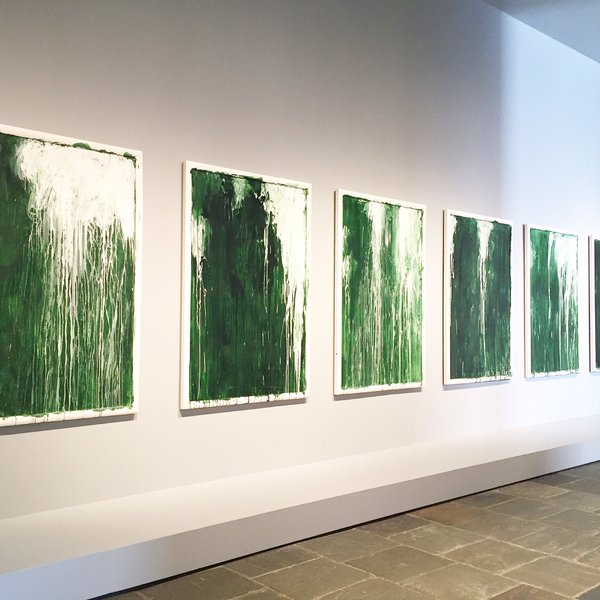

The third project in my 5 in 5 projects serious sought out to really explore what it means to be a finished work. Inspired by a quote from the Met's exhibit "Unfinished", I wanted to see what decomposing something traditionally thought of as complete would look.
Under attack is the rationalistic notion that art is a form of work that results in a finished product.
-Robert Morris
Cy Twombly's "Untitled I-VI (Green Paintings) ca. 1986 inspired me to try different methods to decompose images, and experiment with color and form.
Process
My first experiment was to decompose my profile image using bitmapping. Utilizing Bitmap Sorter by Larixk I played with the controls of direction, scale, and threshold to manipulate my image. Bitmap images are made up of objects drawn mathematically. This editor allowed me to zoom in and enlarge the pixels, creating new shapes.
Bitmap GIFMy second experiment was to again decompose my profile image but using pixel sorting. Using pixelsort.me I took the grid of pixels and ordered them according to their color value. This allowed me to manipulate my image in a different way than bitmap sorting. By performing various manipulations on the same image I was able to experiment with the makeup (colors, pixels) in order to see what new works of art could be created starting from an existing "finished" work.
Pixel Sorting GIFI made GIFs using GIFCreator in order to string together the different versions of each image. This timed delay between images allows the viewer to see the image being manipulated in a simulation of real time.
Challenges, Constraints, and Criteria
Learning to create and embed a GIF was a challenge. This project allowed me to learn to use an online GIF creator as well as learn to use the HTML loop attribute. The constraints of this project involved only being able to use a digital medium. Were I to take this project further, I would be interested in deconstructing something in physical form. I believe that having another dimension would make the work more interesting.
The criteria for the experiment was simply to create what could be construed as a "finished" work by taking something concrete and making it abstract. This project illustrated that a project is never truly complete. It can always stand another iteration. However, there comes a point when the project meets the given criteria, and at that point the creator may feel satisfied enough to stop working. I believe that I achieved my goal, as each version of the original image is beautiful and a piece of art in it's own right.